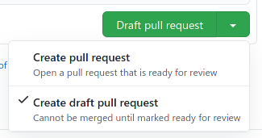
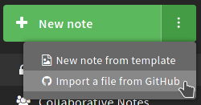
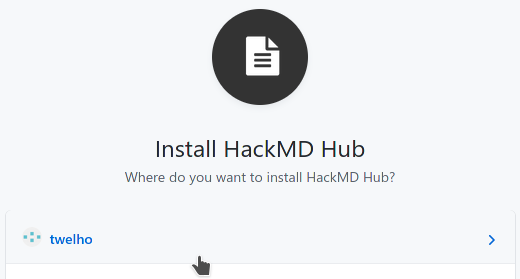
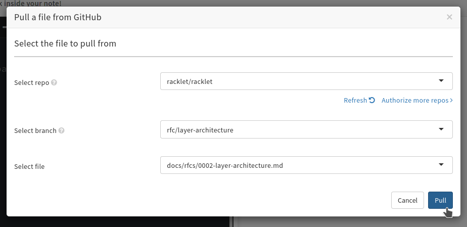
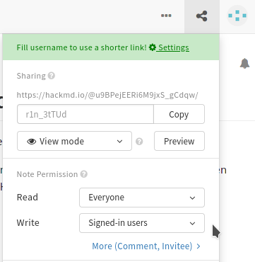
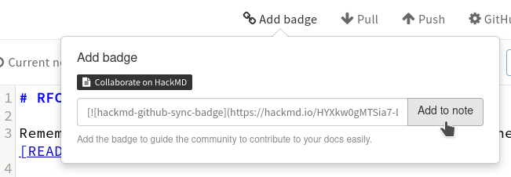
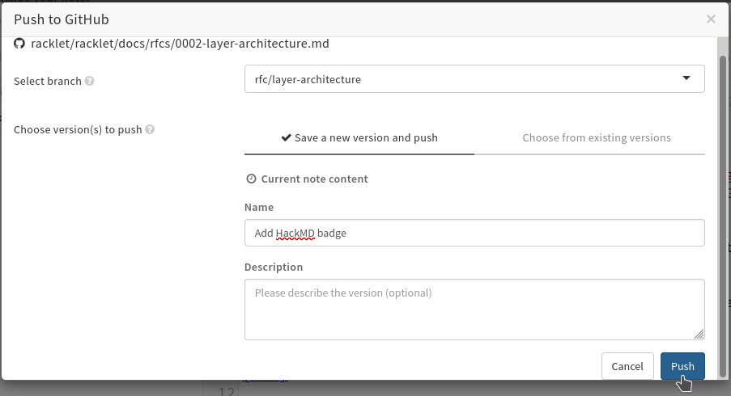

Request For Comment (RFC) Process
A well-defined process for improving Racklet over time in a structured and efficient manner.
Motivation
In order to make a significant change to Racklet; one must first write up a document to clearly describe what the proposed change is, why the change is needed, how to successfully get to the desired goal, and any alternatives considered before settling on a given design. This process is inspired by, and in some aspects similar to, Rust's RFC process and Kubernetes' KEP process.
The accepted RFCs live in this folder. RFC-0000 is the template used as the base for new RFCs, it is inspired by and a combination of the Rust RFC template and the Kubernetes KEP template.
RFCs are formatted using the syntax used by hackmd.io, i.e. a superset of the
GitHub Flavored Markdown (GFM) dialect that GitHub supports. Hence, the RFC might not render as nicely in the
GitHub preview as on HackMD. Each RFC should have its own Collaborate on HackMD badge.
While the RFC lives in a PR (i.e. it hasn't been accepted yet), it is sensible to have pretty open editor
permissions in HackMD (i.e. anyone can edit, or those who are signed in to HackMD using GitHub can edit),
but after the RFC is accepted, and merged to the main branch, the document should be made read-only.
TODO: Look into automating HackMD permission changes using e.g. GH Actions.
Creating a new RFC
In order to create a new RFC, you should do the following:
-
Clone the
racklet/rackletrepository. If you do not have push access to theracklet/rackletrepo, fork the repository first. -
Create a branch for your RFC, e.g.
rfc/foo -
Copy-paste the 0000-rfc-template.md into a new file following the naming schema
docs/rfcs/NNNN-foo.md, whereNNNNis the RFC number. -
Commit the addition of that RFC file. There's no need to change the template quite yet.
-
Push your branch to GitHub, and open a Pull Request in Draft state (choose the dropdown on the
Create Pull Requestbutton, and choose theCreate draft pull requestoption)- 
-
Go to hackmd.io, and sign in with your GitHub credentials.
-
In the overview page, click the three dots
...inside the greenNew Notebutton, and from the drop-down menu chooseImport a file from GitHub- 
-
HackMD will take you to the note editor, and ask you to authenticate with GitHub (again!). Click the button to authenticate and authorize HackMD to read repositories from your account. You can allow all repos, or only some specific ones, but if you have a fork of the
rackletrepo, make sure that one is in the selected set.
- Note: The
rackletorganization already has enabled the HackMD integration; but for some reason (that seems like a bug) HackMD forces you to authorize some repo from your own account, before you can access repositories in organizations (if you are a maintainer).- 
-
Next, select either
racklet/rackletor your fork as the repo to "pull", the branch you just created as the target branch, and the path to the file you just created in the HackMD UI, and then proceed.- 
-
HackMD will show a "diff" and explain it'll pull the file you just selected from GitHub into the note. Continue.
-
Now, you're almost done! Make sure that anyone can edit (or users logged in to GitHub) and anyone can view by. checking the permissions using the "share" button next to your profile picture. NOTE: Do not click the big blue "Publish" button, it not for saving your updated permissions, but instead publishes the file for search engines.
- 
-
Click the three dots
...in the top-right corner, selectVersions and GitHub sync, andAdd badge- 
-
HackMD will now add a badge to the top of the document, that allows reviewers of the PR to easily jump to the online edit view. Next, click
Push, select the same branch as your PR lives in, and write some commit message, e.g.Add HackMD badge. Finally, clickPush.- 
-
You can now verify on GitHub that HackMD created a commit for you in the PR.

Editing/updating an RFC
While the RFC has not been merged, feel free to edit the document in HackMD (quickly open it using the badge on top of the document). Whenever you want to synchronize the changes to GitHub (do this fairly often, we don't want a large diff between GitHub and HackMD), just repeat the push procedure.
If the RFC has already been merged (and the document on HackMD is read-only):
- Create and push a new branch, based on the latest
main, for example as follows:git checkout maingit pullgit checkout -b rfc/foo-updategit push --set-upstream origin rfc/foo-update
- Enable the editing permissions in HackMD for the file again, and make your changes and push.
- NOTE: Make sure to re-target HackMD to push to your new branch instead of the original one!
- Draft a new pull request for the updates.
Although discouraged, if external changes are done by e.g. pushing a commit directly to GitHub or merging review suggestions, you need to perform a pull in HackMD to get it up to date again. Reviews should be done exclusively on GitHub, in the pull request for the RFC.
NOTE: This, for the time being, might not fully work as expected for non-maintainers. If you encounter an issue with this process, please open an issue, and we'll try to resolve it to make things as convenient as possible. We'll improve this process over time to make contributing RFCs smoother for non-maintainers as well.